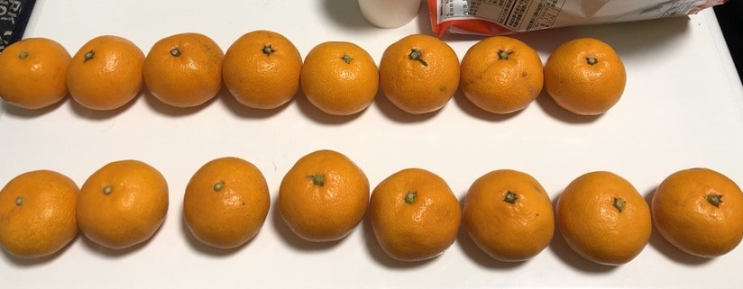
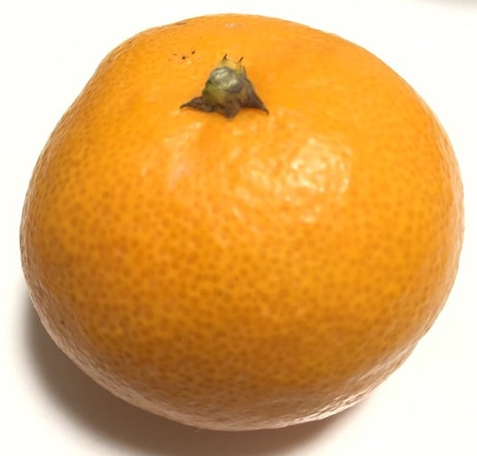
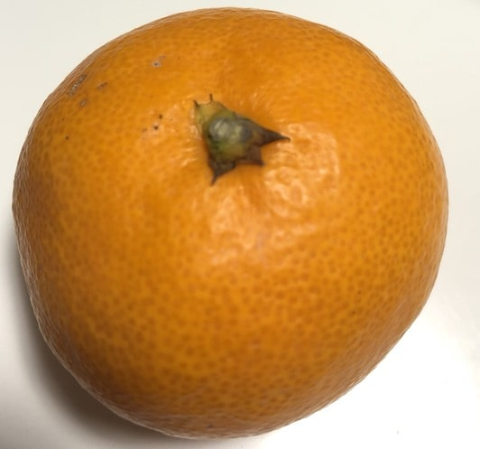
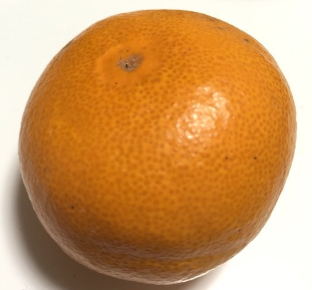
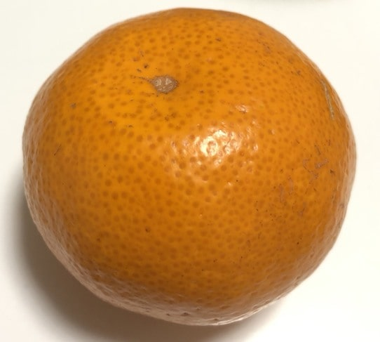
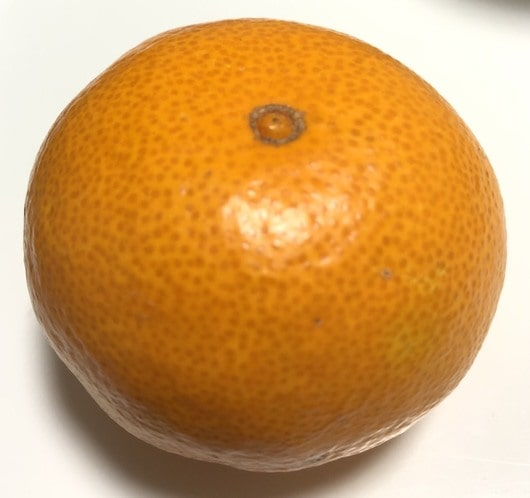

どうも夏はタンクトップマスター,冬はヒートテックマスター兼みかんマイスターの久保田です！( )
今回はタンクトップの着心地ランキングでは無くおいしいミカンの見分け方について書いていこうと思います！( )
何故ミカンをチョイスしたの？と聞かれますが、冬にタンクトップの話題は需要が無いのと、
実は夏より冬好きの自分にとってミカンはコタツdeダラダライフのお供に最適です。
(最近はスマブラを楽しみながらコタツでほっこりしてます。)( )
せっかく食べるなら美味しい方が良いですよね！では本題に入りましょ〜う。
小さいほど甘みが凝縮されていて甘いです。S~Mまでの大きさなら大体甘いです。( )
色はオレンジ色が濃いほど甘くて、形は平たい方が良いですね。ヘタの裏の窪みが凸凹していたら菊みかんと呼ばれるもので大体甘いです。見つけたらラッキーですね。( )
下の画像は家にあるミカンを甘い順に2列とも右から並べました。( )
我が家ではみかんドラフト会議が並べられた後に待っています。


軸の太さは細い方が甘いです。( )
軸が太いほど樹齢が若いので水分が多く送られてしまい糖分が薄れてしまう為です。

色は黄色に近い方が甘いです。軸と同じように緑色のミカンは若いミカンなので水分が多いです。画像のヘタぐらい黄色ければ十分甘いです。
油胞というのはミカンの皮表面にある丸いブツブツの事です。( )
以下2枚の内の上の画像は甘いミカンで次の画像は少し味が薄かったやつです。( )



画像のようにポコっと出っ張りがあれば甘いミカンの確率が高いです。
ミカンを更に美味しくするなら、皮に切れ目を入れて電子レンジで30秒加熱して冷ましてから食べると甘くなります。
実はミカンを皮ごと半分に切って鍋の中に入れると美味しいです。柚子よりも甘く感じて、寄せ鍋やちゃんこ鍋のスープと相性が良いです！
ミカンを揉むと甘くなると言いますが、揉んでからすぐはあまり糖度は変わらず、揉んでから１日置いておくと甘みが増します。( )
2日以上置いてしまうと傷みやすくなるので食べるのを忘れずに！
実に付いている白い筋はペクチンやヘスペリジン等が豊富に含まれているので便秘や美容に効果的です。苦手じゃなければ取らずに食べましょう。( ) そして白い筋は アルベド(元はラテン語) と言い、意味は 白さ です。( )
ここから少しオタクサイドに脱線します
ラノベのオーバーロードに出てくる アルベド というキャラ
はここから名前が来ているそうです。--エチエチLv75くらいセクシーですね--( ) オーバーロードは元々ネット小説でアニメ化もしていて、現在は 小説家になろう というサイトで無料で読むかAmazonPrimeビデオ等で観れます！( ) 3期まであるので全部観るのに時間がかかりますが、よくある転生俺tueee系とは気持ち良さが全然違うので観たことが無い人は是非読んで下さい！( ) 今年の津田沼祭で来てくださったMYTH&ROIDさんがOPやEDを3期全て歌っています。合わせて聞いてみて下さい！( )
皮には掃除に最適！！
皮の裏側(白い方)で冷蔵庫の中、台所シンク、蛇口、ガスコンロなどの金属部分を磨くとピカピカになります。
台所などの水垢はアルカリ汚れなので、皮に含まれるクエン酸で落とせる上に、水で洗い流す必要も無いので節水・節約にもつながりますね。
ガスコンロの油汚れも皮に含まれるリネモンで綺麗に取れます。
そして掃除した後もペクチンの作用でコーティングされて綺麗な状態をキープ出来るので理にかなっていますね！
もちろんみかんの皮を洗剤としても使えます。( )
[材料]
[作り方]
以上で美味しいみかんの見分け方講座は終了です。ソフメと全く関係の無い内容でNEVERまとめ感が溢れる記事でしたが役に立てそうなら幸いです。(NEVERまとめより5倍くらい情報量あると思います。)( )
こんなに短時間で みかん の文字を何回も見たのは初めてなので途中でゲシュタルト崩壊したりしましたが、レンジで温めて食べるのと大掃除で皮を使う2つだけでもいいので試して見てください！( ) またいつか自由に記事が書ける機会があれば、ボルタリングの薦め！とか 自己流!陰キャ向け筋トレまとめ卍 など紹介したいですねw ご観覧ありがとうございました！